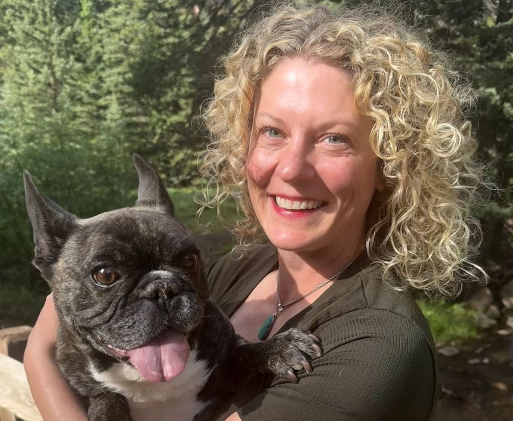

Kara Erickson, DVM
Co-owner · Medical Director
Hello, I'm Dr. Kara Erickson, co-owner and Medical Director of Cement Creek Veterinary Hospital.
Read full bio
After earning my BS in Molecular Biology from the University of Washington, I knew medicine was in my future – I just hadn't figured out which kind. A front desk job at a veterinary hospital cleared that right up. I went on to complete veterinary school at Washington State, and spent the next 15 years practicing across Bend, OR and the Gunnison Valley. CB South is now very much home.
I take an honest and informed approach to medicine and patient care. I'm especially passionate about preventative care, internal medicine, dental health, and client education. I think pet parents deserve the full picture, always – because veterinary medicine means nothing if the people on the other end of the leash don't understand what's happening and why.
When I'm not in the clinic, you'll find me on the trails, spending time with friends, or keeping up with my six-year-old son, who has yet to slow down.
I've always had a soft spot for Pitties and Frenchies – big personalities, even bigger hearts, and completely unaware of their own size.
If you were a dog breed, what would you be and why?
Australian Cattle Dog (aka heeler). Sharply focused, scrappy, and absolutely will herd you in the right direction whether you asked for it or not… but catch me off duty and I'm an entirely different animal.